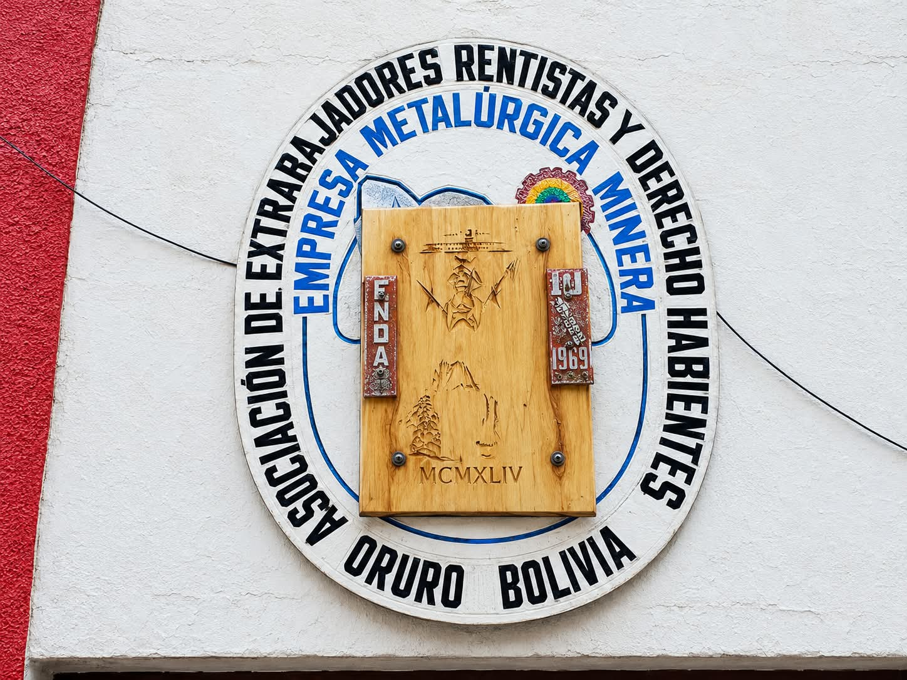
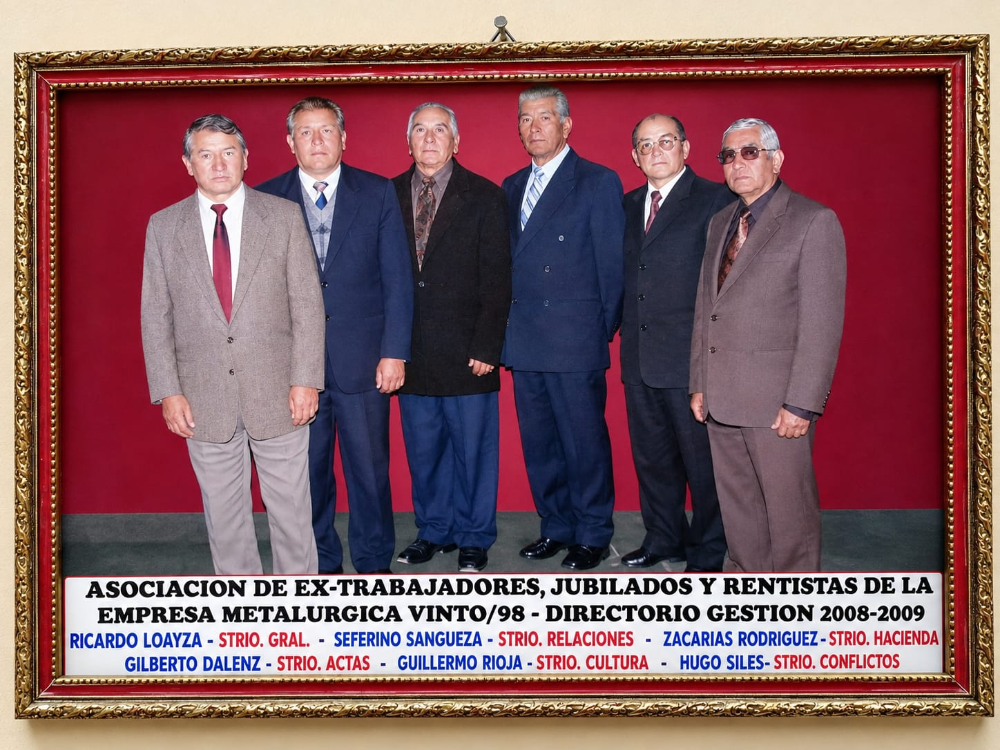

Conoce la historia, los orígenes y el compromiso del Mausoleo ENAF Oruro.

La historia del Mausoleo está estrechamente vinculada a la Asociación de Trabajadores Rentistas y Derechohabientes, organización que representa a trabajadores que dedicaron años de servicio a la actividad metalúrgica. A través del tiempo, la Asociación ha estado relacionada con la administración y conservación del Mausoleo, contribuyendo al cuidado de este espacio y al registro de las personas que forman parte de su historia. En este lugar se conserva la memoria de generaciones de trabajadores y sus familias, convirtiendo al Mausoleo en un espacio de respeto, recuerdo y reconocimiento a quienes dejaron parte de su vida en el trabajo.
“Un lugar donde la historia de nuestros trabajadores permanece viva en la memoria de sus familias.”
10-noviembre-1998
Gracias a los compañeros de la asociación de Rentistas metalurgicos
Un espacio creado para honrar a quienes dedicaron años de su vida al trabajo y a la historia de la Empresa Metalúrgica Vinto.

A lo largo de los años, el Mausoleo ha atravesado diferentes etapas relacionadas con su conservación, administración y permanencia. Durante este proceso, la institución trabajó para reafirmar y recuperar los derechos sobre este espacio, permitiendo mantener su administración y continuar con el cuidado del Mausoleo.
Actualmente cuenta con 03 pabellones y aproximadamente 300 nichos.
Esta información será actualizada con los datos oficiales proporcionados por los encargados de la institución.
Administrar y gestionar de manera responsable los servicios destinados a los difuntos que forman parte de nuestra comunidad de extrabajadores, garantizando orden respeto y transparencia.
Nuestro objetivo es contribuir a una administración organizada, responsable y accesible mediante el uso de herramientas tecnológicas.
Consulta el estado de un nicho o la información de una persona fallecida registrada en el mausoleo.
Ir a consulta